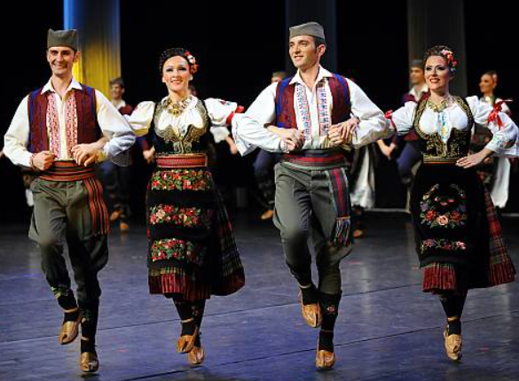

|
|
|
Neko "kolo" je ova pesma Nisam naÅ¡ao noviju interpretaciju ove pesme. MokranjÄeva verzija pokazuje da je reÄ o âkoluâ. Kolo srpskog kompozitora-pevaÄa Predraga ŽivkovicÌa Tozovca ima sliÄan naslov i zavrÅ¡ni stih koji podsecÌa na âAoj Nenoâ. Lepota koja ga je hladno prebila, na kraju odgovara na Milovo napredovanje: "Aoj, Mile, tvrda glavo!/ Novi život, stara slavo!/ Igraj, pevaj, nemoj stati!/ Ja cÌu s tobom zaigrati." Osim toga, drugi stih izgleda kao test pevaÄeve agilnosti govora: "Na vr' brda vrba mrda..." PoÅ¡to je reÄ o "kolu" Opravdanje za upis "kola" na Listu nematerijalnog kulturnog nasleÄa ÄoveÄanstva: "Kolo je tradicionalni kolektivni narodni ples, koji plesaÄi izvode u ritmu muzike u krugu, ruku pod ruku, ispruženih prema zemlji, tokom privatnih i javnih okupljanja. UmetniÄka udruženja i tradicionalne plesne trupe takoÄe se bave ovim plesom, koji ima važnu integrativnu druÅ¡tvenu funkciju. O znaÄaju i trajnosti ove umetnosti svedoÄi i predstavljanje kola na proslavama najznaÄajnijih privatnih ili javnih dogaÄaja. UÄenje kroz direktno uÄeÅ¡cÌe je najÄeÅ¡cÌi metod prenoÅ¡enja ovog plesa. TakoÄe se predaje u normalnom obrazovnom sistemu i muziÄkim i plesnim Å¡kolama. |
Ce chant est un "kolo" Je n'ai pas trouvé d'interprétation récente de ce chant. La version de Mokranjac montre que c'est un "kolo" (ronde). Le kolo du compositeur-chanteur serbe Predrag ŽivkoviÄ Tozovac a un titre semblable et un couplet final qui rappelle "Aoj Neno". La belle qui le battait froid, finit par répondre aux avances de Milo: "Aoj, Mile, tvrda glavo!/ Novi život, stara slavo!/ Igraj , pevaj, nemoj stati!/ Ja Äu s tobom zaigrati." "Allons, Milo, cher entêté/ Vis ta vie, oublie le passé!/ Danse, chante n'arrête pas/ Je mettrai mes pas dans tes pas!" De plus l'élocution du chanteur est mise à rude épreuve à la seconde strophe: "Na vr' brda vrba mrda..." = "Au sommet de la colline un saule tremble..." A propos du "kolo" Justification de l'inscription du kolo sur la Liste du patrimoine culturel immatériel de lâhumanité: Le kolo est une danse populaire collective traditionnelle, exécutée par des danseurs au rythme de la musique autour dâun cercle, main dans la main, les bras tendus vers le sol, lors de rassemblements privés et publics. Les associations artistiques, et les troupes de danses traditionnelles pratiquent également cette danse qui possède une importante fonction sociale intégrative. La présentation de kolos lors de la célébrations des événements les plus marquants privés ou publics témoigne de lâimportance et de la pérénité de cet art. Lâapprentissage par participation directe est la méthode la plus courante de transmission de cette danse. Elle est également enseignée par le système éducatif normal et les écoles de musique et de danse. |